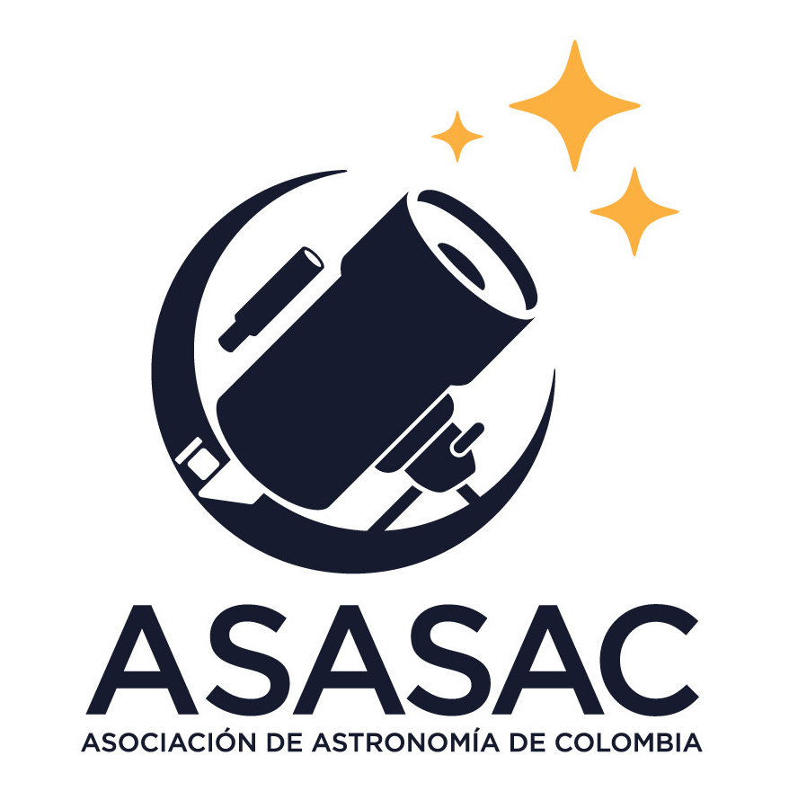
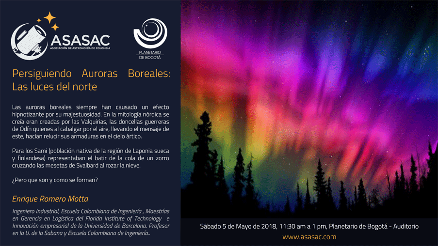
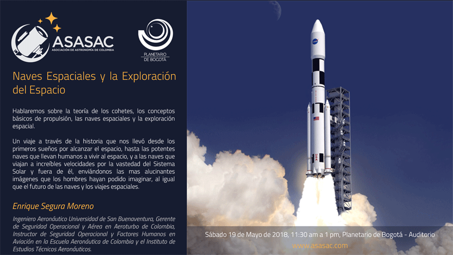
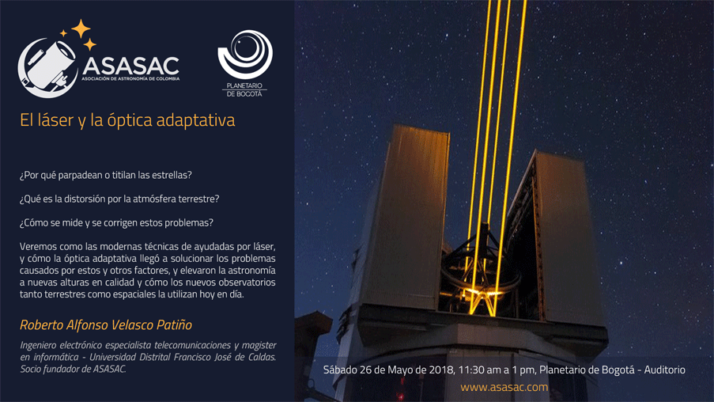
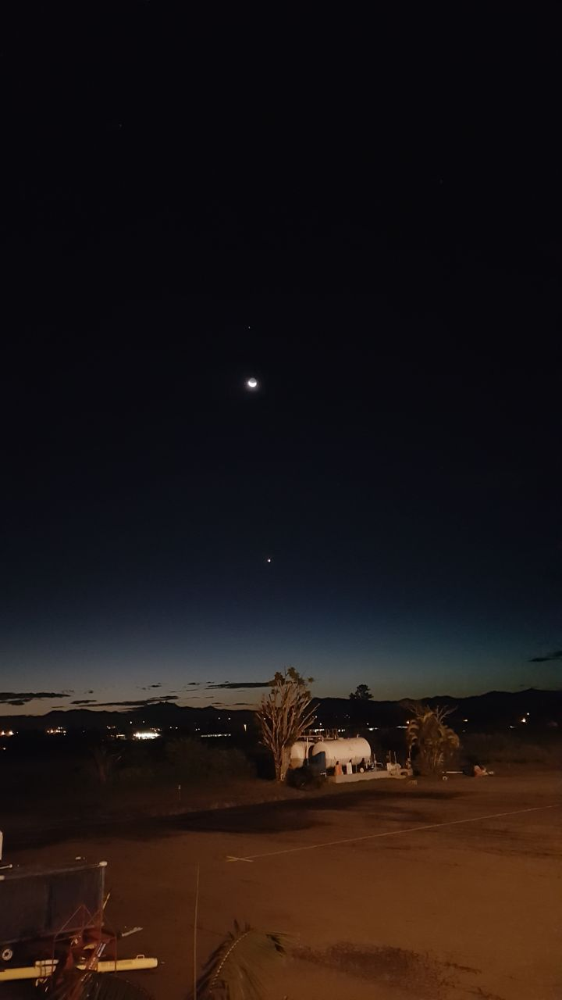

| Si no puede visualizar bien este correo: click aquí. |
|
 |
| Junio 2018 |
CONFERENCIAS
Sábados, 11:30AM a 1:00PM, |
|  |
|  |
|  |
INVITACIÓN ESPECIAL |
|
Si en tu colegio, universidad, empresa, o simplemente con tus conocidos tienes o perteneces a algún grupo de astronomía o afines, te invitamos a participar en nuestra programación de conferencias en el Planetario de Bogotá, para asistir como conferencistas invitados. Comunícate con nosotros a: divulgacion@asasac.com |
ASASAC A TRAVÉS DE LA HISTORIA:Un recorrido fotográfico por nuestras actividades |
ASTROFOTO DEL MESLuna, Júpiter y Aldebarán - Foto por Andrei Romero G. |
|  |
NOTICIAS |
|
|
Lanzado el cazaplanetas TESS
La NASA dispondrá en breve de un nuevo observatorio pensado para detectar planetas extrasolares. El llamado TESS (Transiting Exoplanet Survey Satellite) fue lanzado a las 22:51 UTC del 19 de abril a bordo de un cohete Falcon-9 v1.2, que lo situó en una órbita preliminar muy elíptica con un apogeo de unos 268.000 km. Más información |
Un hotel de lujo a 320 km de la Tierra y US$ 792.000 la noche
La estación Aurora promete convertirse en el primer hospedaje en el espacio. A bordo de la Estación Espacial Internacional, la rutina de un astronauta consiste en trabajar, hacer ejercicio, descansar, repetición. Pero ¿qué pasa si las probabilidades de tener lo adecuado para el cuerpo de astronautas de la Nasa son, por decir lo menos, mínimas? Más información |
|
La sonda Juno revela nuevas imágenes de ciclones gigantes en Júpiter
También expusieron nuevos datos sobre el funcionamiento del sistema gravitatorio y el campo magnético del planeta más grande de nuestro sistema solar. Científicos de la misión Juno de la NASA mostraron hoy nuevas imágenes y una animación tridimensional de ciclones gigantes en el polo norte de Júpiter, el planeta más grande y enigmático de nuestro sistema solar. Más información |
¿Dónde está la materia que falta en el Universo?
Los astrónomos del observatorio espacial XMM-Newton de la ESA han rastreado los halos gaseosos que rodean las galaxias en busca de materia perdida que, se cree, podría hallarse allí. Sin embargo, no han tenido éxito. ¿Dónde podría estar? Toda la materia del Universo existe bien en forma de materia ‘normal’, bien en forma de la invisible y particularmente esquiva materia oscura, que es seis veces más abundante. Más información |
|
El Sistema Solar, la maravillosa hélice que viaja a 828.000 kilómetros por hora
Solemos imaginar el Sistema Solar con nuestra estrella en el centro y los planetas girando tranquilamente y en armonía a su alrededor. Pero en realidad, el Sol tampoco está quieto. Es una de las 300.000 millones de estrellas que giran alrededor del centro de la Vía Láctea en una órbita casi circular y viaja a unos 828.000 kilómetros por hora. El resultado es que si viéramos al Sistema Solar pasar por nuestro lado veríamos algo muy distinto a lo que estamos acostumbrados. Más información |
|
VIDEOS RECOMENDADOS |
|
La particular órbita de TESS para realizar su misión
Happy Learning!! Una clase sobre el Sol para niños
|
ASASAC - Asociación de Astronomía de Colombiacontacto@asasac.com |
| www.facebook.com/asasac.colombia | www.asasac.com | www.festivaldeastronomia.com |
|
Diseño: Aiman Abdel Samad Programación y contenido: Edgar Orozco Guayara |
| Clic aquí si desea dejar de recibir información. |